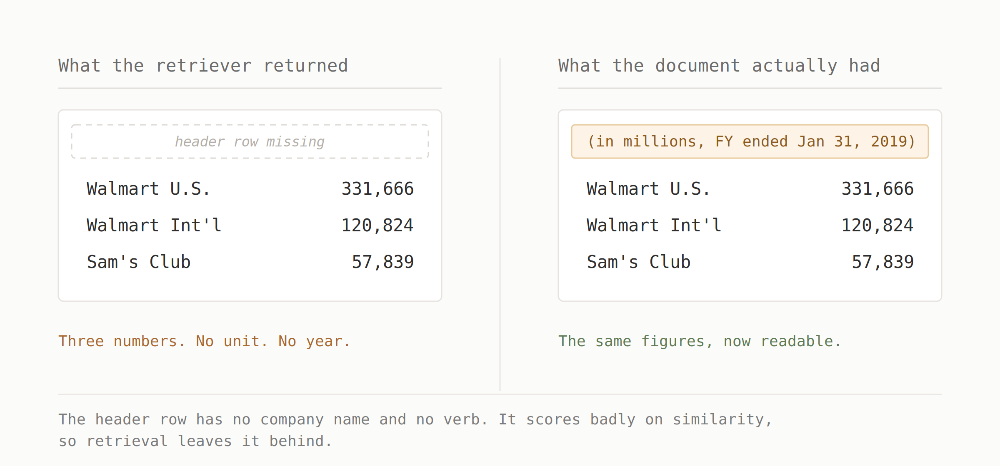
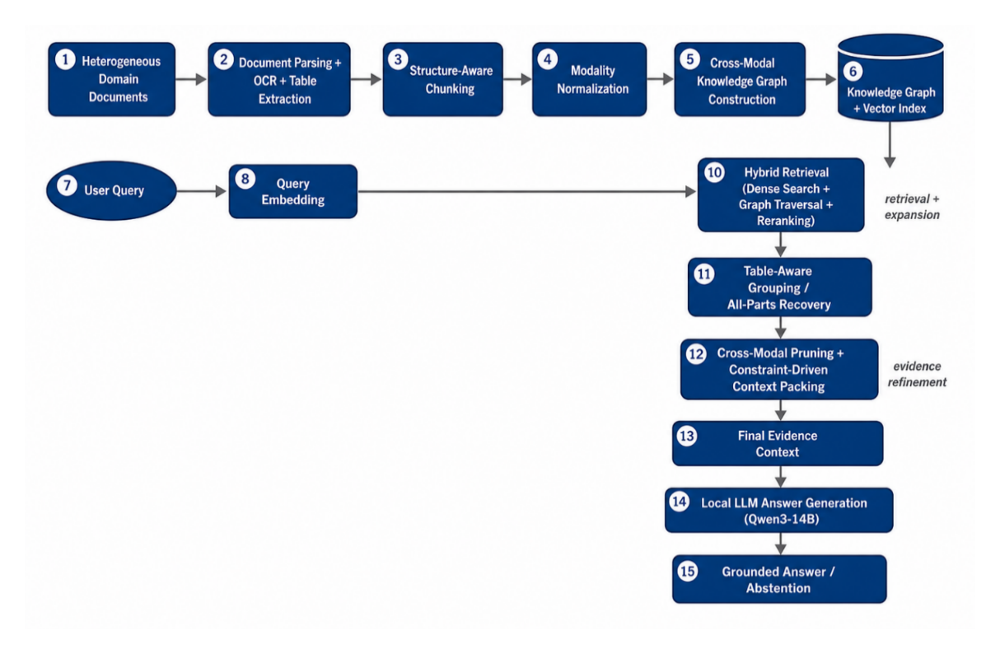

Your RAG Didn't Hallucinate. It Was Handed a Broken Table.
This came up in my weekly reading, and it shifted how I think about hallucination in RAG. I had been treating it as a retrieval quality problem. Retrieve better chunks, get better answers.
The example that moved me off that is simple enough.
Ask a RAG system about a company's 2019 revenue. It searches for chunks that resemble the question and it finds the right ones. The rows with the figures, the company name sitting right there. Nothing about the retrieval looks wrong.

The header row stayed behind. It has no company name and no verb, nothing that looks like the question, so it scored low on similarity and did not make the cut.
So the model gets three numbers with no unit and no year. It answers anyway, and that answer gets logged as a hallucination.
What I kept coming back to is that nothing in this pipeline failed. The retriever found relevant content. The model read what it was given. The failure happened in between, in the part where retrieved chunks get assembled into a prompt, and I had never thought of that as a place where anything happens.
The paper is Hallucination in Retrieval-Augmented Generation is a Context Construction Problem, from IAIT 2026, and that middle step is what it is about.
The obvious answer is graph RAG. Link related pieces during ingestion, walk outward from whatever matched, and the header comes back through its connection to the rows.
That does work for this case. But the paper's point is that walking outward also pulls in loosely connected material, and improved coverage does not mean improved context. You searched harder and got a messier pile. The evidence stopped being missing and started being buried.
The other direction is context compression. Methods like RECOMP and EXIT trim the retrieved pile before it reaches the model, cutting the passages that are not carrying weight.
The limitation there is structural. Compression can only remove. If the header was never retrieved, no compressor is going to bring it back. And since compression works by judging which passages are worth keeping for the question at hand, a header row is a hard case for it. It carries no information that answers the question by itself. Its value is entirely in what it lets you read.
One approach adds too much. The other can only subtract. What I found useful is that neither of them asks whether the evidence that survives still holds together.
Their framework is called L-DSRAG, and its approach starts before any question exists.
At ingestion, they tag things so the pieces can find each other later. Each table gets an ID and is split into numbered parts, so part 4 still knows it belongs with parts 1 through 3. Text gets reassembled into full paragraphs before it is cut into chunks, using blank lines, indentation and bullet continuity to work out which lines belong together, so the cut lands on a boundary that means something. Tables, images and OCR text all get converted into text and stored in one shared index, but each chunk keeps a marker for what it originally was, along with its page, its heading and its position in the document.
None of that improves retrieval. It is all setup.

The payoff comes at query time. Search runs twice, once on embedding similarity and once through a reranker that reads the question and the candidate together, and the two scores get combined. Then instead of passing those hits straight to the model, three things happen to them.
They pull in the chunks sitting next to a match in the original document, on the reasoning that the missing half of an answer is usually a paragraph away from the half you found, and similarity search will not surface it because it does not look like the question. They walk the graph outward from those matches to find linked evidence, on a leash, so a neighbour only gets in if it is a few steps away and still close in meaning, with a cap on how many can join. And if the search hit one part of a table, the table ID pulls the whole thing back, header and units included, and it goes into the prompt as one block or does not go in at all. Never half a table.
Only then does the system cut back to fit the token budget, dropping duplicates, weak scores and anything structurally broken.
What I find interesting is the shape. Retrieval narrows, the middle steps widen, packing narrows again. Standard RAG only runs the first and last of those. Whatever the search missed stays missed, because nothing in the pipeline is ever looking to add.
The design constraint underneath all of it is that the model is small. The whole system runs on a locally hosted 14B generator with an off the shelf embedder and no external APIs, which is part of the argument. Context built properly is doing work that would otherwise fall to model scale.
They compared three setups against the same documents, the same questions and the same generator. Only the way evidence was assembled changed.
| Setup | Faithfulness | Answer relevancy | Context recall | Context precision |
|---|---|---|---|---|
| Traditional RAG | 0.750 | 0.740 | 0.740 | 0.730 |
| Proposed, without pruning | 0.850 | 0.830 | 0.900 | 0.737 |
| Full proposed | 0.900 | 0.880 | 0.947 | 0.693 |
Three metrics went up. Context precision went down, and ended up below the baseline it started from.
At first I read that as a cost they were absorbing. Then it clicked what was actually happening.
Context precision asks what share of the evidence you supplied was relevant. Keeping a table intact means carrying the header row, the unit label and the neighbouring rows, and none of those answer the question. A judge scoring chunk by chunk marks them as noise.
By that definition they are noise. The answer is also unreadable without them.
So the metric is penalising the exact behaviour that made the system work. Most of the improvement also arrived before pruning was switched on, which suggests the structural work is doing more than the filtering is.
And it is worth being clear that this is a small study. 100 questions, one financial corpus, manually scored, with plain dense retrieval as the only baseline. None of the graph or compression methods it argues against were actually run against it.
What I'm Taking Forward
The paper left me with three things.
- From the framing: context construction is a stage, not a formatting step. Retrieval decides what is available and generation decides what gets said, but the assembly in between decides what the model can actually use. It had never occurred to me to treat it as something you design.
- From the method: structure has to survive ingestion or it cannot be recovered later. The table ID that pulls a full table back at query time only works because it was assigned before any question arrived. Whatever gets flattened during chunking is gone for good.
- From the results: context precision measures the wrong unit. It scores chunks one at a time, and some evidence only means anything in groups. A header row will never score well on its own. That is not a flaw in the header row. Their ablation also showed where the gain sits. Chunking, retrieval, graph expansion and table grouping together moved faithfulness from 0.750 to 0.850. Pruning, the step that filters out weakly related evidence, added the remaining 0.050.
The open question I keep coming back to is how you would measure structural completeness at all. Faithfulness and answer relevancy are asking about the answer. Context recall and precision are asking about chunks. Chunk level precision punishes the header row, because relevance is scored per piece and a header is not relevant on its own. Context recall gets closer, since it asks whether everything needed was present, but it was judged manually here across 100 questions and it does not separate missing a fact from missing the frame that makes the fact readable.
One direction I want to look into: if the evidence carries structural metadata already, table IDs, part counts, heading parents, then completeness might be checkable directly rather than judged. A table group that arrives with 3 of 5 parts is measurably incomplete, and no relevance score is needed to know that.
Whether that is a useful signal or just a proxy for the same thing recall already captures is what I want to find out.
The example I started with was a retrieval that looked correct. Nothing in the retriever's own scoring had any way to see what was missing. The header row was sitting one chunk away the whole time.
References
Hallucination in Retrieval-Augmented Generation is a Context Construction Problem: A Constraint-Driven Cross-Modal Framework. Li and Okolie, Tohoku University, IAIT 2026.